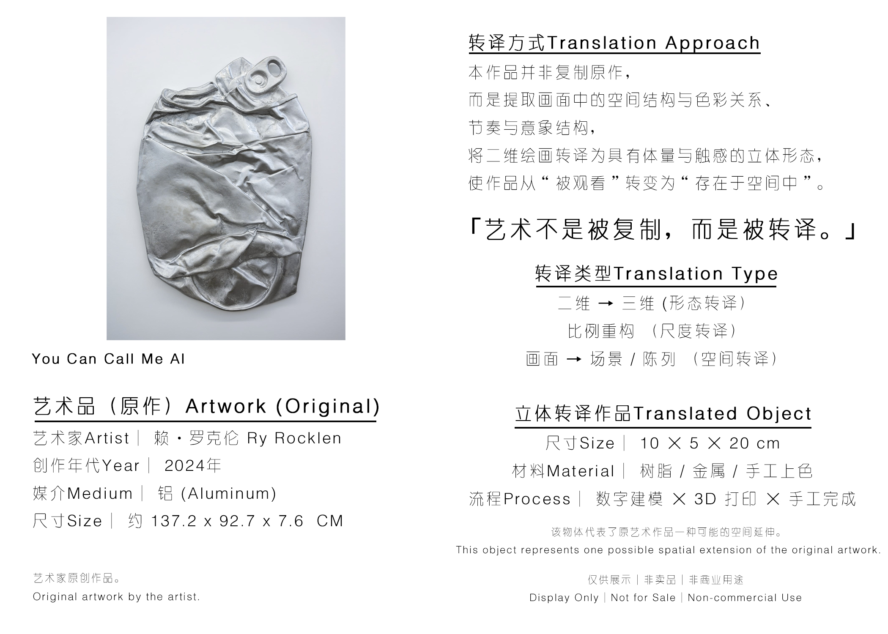
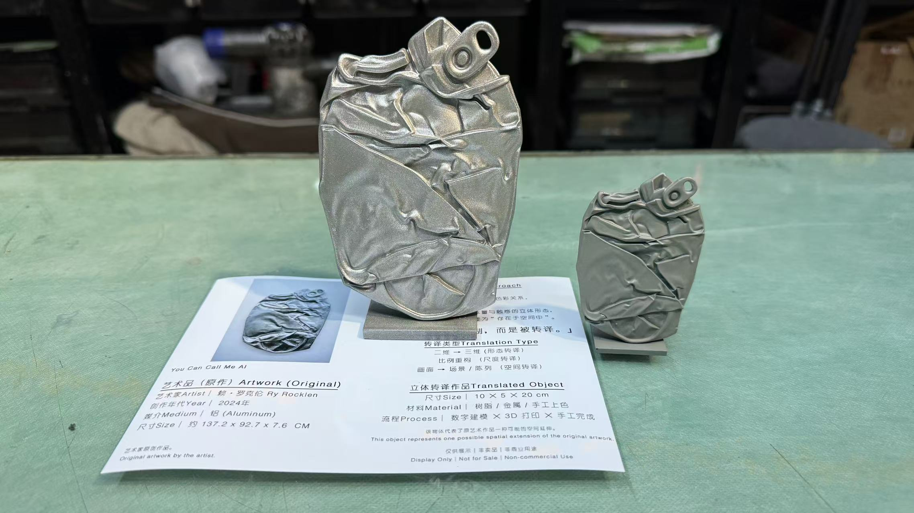

展签二维码入口
每一件实体作品旁边可以放置二维码，扫码进入该作品的数字档案页。
Spatial Digital Archive
这一步不是直接做完整 MR 展厅，而是先为每一件转译作品建立可扫码访问的数字档案：原作信息、转译说明、实拍记录、3D 模型、版权状态与授权可能性都集中在同一个页面里。
MVP Case 01
这个最小可行版本先验证一件事：观众站在作品前，扫描二维码后，能够看到原作背景、转译方式、实体模型实拍，并在线旋转观察三维结构。后续再在同一套页面上增加 AR / MR 空间放置能力。


3D Model Viewer
当前模型文件较大，首次加载可能需要一些时间。这个模块后续可以继续升级为展厅二维码入口、手机端 AR 预览，以及 MR 眼镜中的空间叠加版本。
每一件实体作品旁边可以放置二维码，扫码进入该作品的数字档案页。
观众可以旋转、缩放模型，看到实体展陈中无法完整观察的结构细节。
同一个 GLB 模型后续可继续用于 AR / MR 空间放置、展厅导览和授权展示。
iPhone MR Test
Archive Structure
艺术家、作品名称、年份、媒介、尺寸、原作版权归属与展示来源。
记录作品如何从二维图像进入空间结构：结构提取、比例重构、材料选择与制作方式。
记录实体模型、数字模型、白模、涂装版本、放大版本或展览版本。
展览展示、收藏样本、文创衍生、礼品定制、教育成果或空间装置。
明确原作是否为公共领域、是否获得艺术家授权，或当前仅作研究展示。
判断是否适合进入限量版、衍生品、空间项目、数字内容或 MR 展览授权。
MR Roadmap
作品旁边放置二维码，观众扫码进入作品档案页，查看原作、说明、实拍与授权状态。
在网页中旋转观察转译模型，形成“原作 + 实体 + 数字模型”的完整记录。
未来让观众在现实画展中看到作品的虚拟空间版本，实现实体展览的数字增强。
Next Step
当 36 组测试样本、真实艺术家案例和未来授权作品都进入档案系统后，元维构会逐渐形成一个可检索、可展示、可授权、可进入 MR 展览的三维艺术档案库。